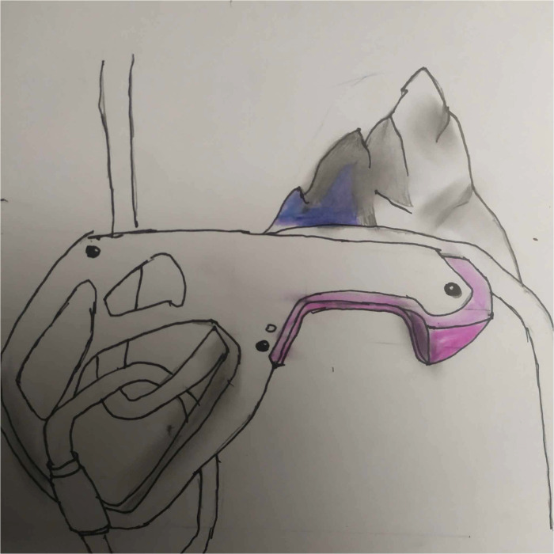
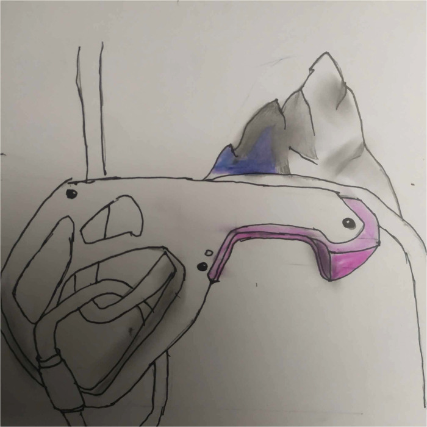

Le dessin
Ma passion pour le dessin est venue un peu plus tard, environ vers mes 10-11 ans. En rentrant au collège, j'ai découvert d'autres personnes avec d'autres passions, ce qui m'a fait m'intéresser à beaucoup de choses,
notamment au dessin. À cette époque-là, j'ai donc commencé le dessin en cherchant mon style et en dessinant beaucoup, mais par période. Encore maintenant, je continue à dessiner, cependant je le fais de manière plus régulière. J'améliore toujours mon style et essaie de trouver de nouvelles façons de faire.
Voici certains de mes dessin:



